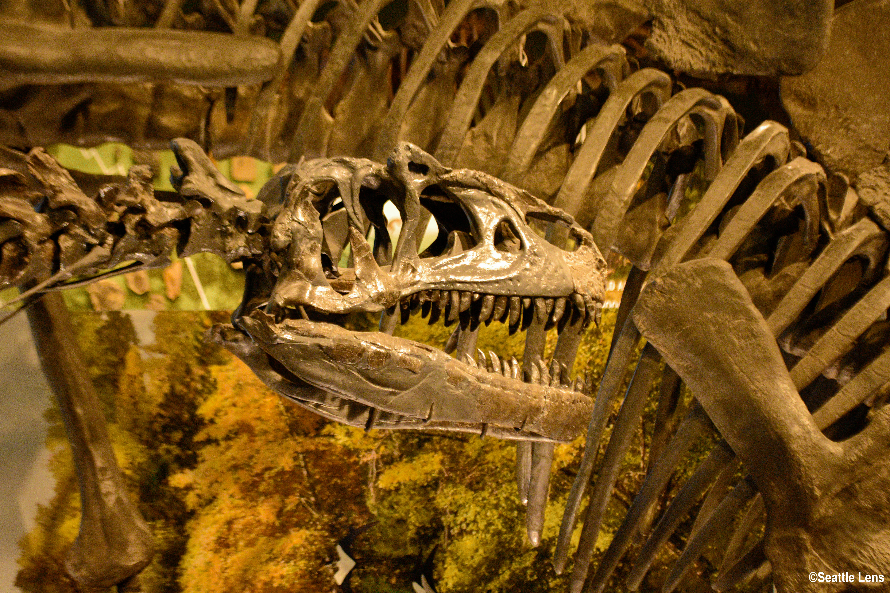

Below are some of my favorite photos I've taken. Most photos have gone through several editing passes, so don't expect your photos to look this good raw. I hope you enjoy them as much as I enjoyed taking them!
|
This photo was taken by drone during my Greece vacation. |
|  | This is a photo taken during the previously mentioned summer course. |
|
This photo was taken during a road trip from Vancouver to Seattle. |
|
This photo was taken during the above mentioned vacation. |
|
This photo was taken on one of the last few days of summer. I only got a few chances to take photos of seagulls, but am happy with what I got. |
|
This photo was taken during my first trip to the dog park, one of my favorite spots for photos. |
|
This photo was taken on a late night walk in Greece and I am so happy to get these reflection lines in the water. |
These are just a few of my photos, if you want to see more, check out my about page, linked above and here